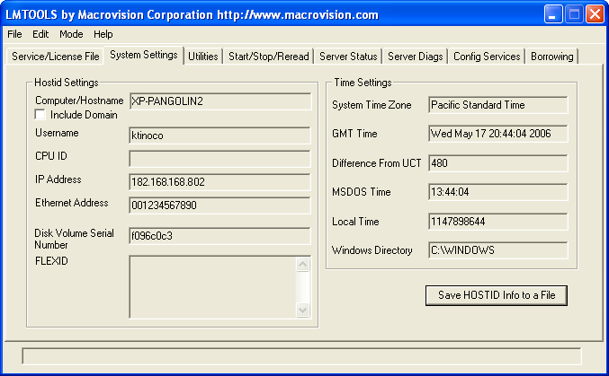
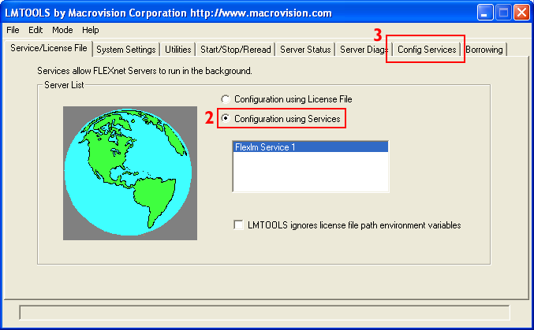
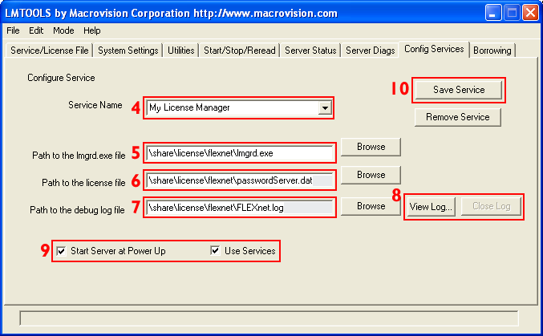
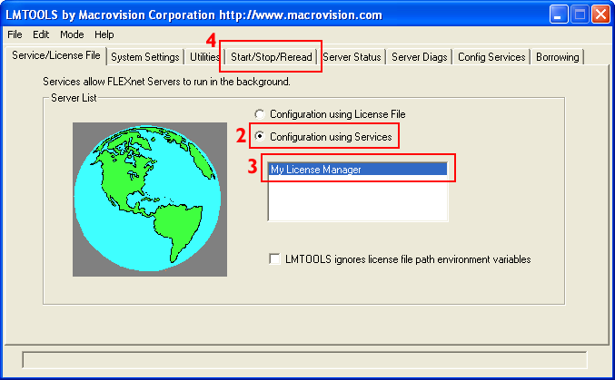
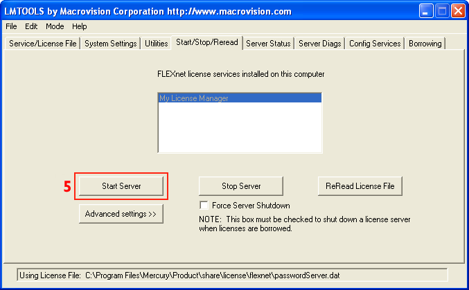
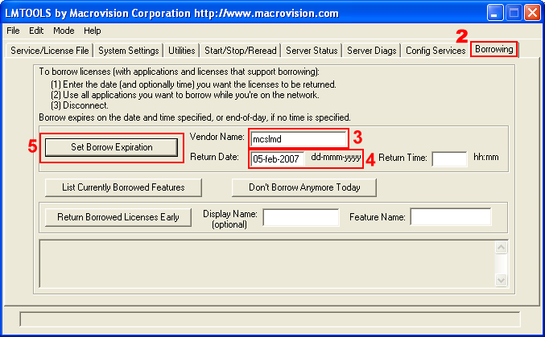

{kind=link}

These are basic instructions for configuring FLEXnet licensing.
They are only applicable if your site has purchased Amira floating licenses for use with FLEXnet. The standard Amira licensing does not use FLEXnet, so if you are using standard licensing, these instructions do not apply to you.
The FLEXnet software supports a wide array of licensing options. Currently, FEI Visualization Sciences Group provides the FLEXnet licensing option to support floating licenses. In this scenario, a site purchases a specific number, N, of Amira licenses. The FLEXnet license server tracks the licenses being used and allows simultaneous use of up to N instances of the Amira software. The advantage of this approach is that, unlike standard Amira licensing, Amira is not locked to a specific computer, but can be run on any computer that can communicate with the license server.
A small set of FLEXnet-related files are provided for managing the FLEXnet licensing. These files must be copied onto the system to where the license server will be run. The license server can be run on the same system where Amira is installed, but it doesn't have to be.
One of the supplied files, lmgrd ("license manager daemon"), is a FLEXnet executable that is responsible for starting the vendor daemon, which does the actual checking in and out of licenses specific to that vendor. The supplied vendor daemon, mcslmd ("FEI Visualization Sciences Group license manager daemon"), handles the requests for licenses from the Amira application programs.
There is a FLEXnet license file that is read by the server. This license file contains information indicating which products are licensed and how many licenses are allowed for each.
In addition, each Amira installation has a separate license file which indicates the name of the FLEXnet license server.
The sections below will provide the basic technical details of installing and managing a FLEXnet license server.
For complete technical details regarding FLEXnet itself, see the technical documentation provided by Flexera Software (formerly Acresso Software), supplier of the FLEXnet licensing technology http://www.flexerasoftware.com:
FLEXnet Licensing End User Guide (pdf)
The first thing to do is decide on which computer you wish to run the FLEXnet license server. This system should be "visible" from any system that might want to request a license. It should also be highly reliable.
The server can be installed on a computer on which Amira is installed, but it does not have to be.
It is possible to do FLEXnet licensing in a heterogeneous environment. That is, the server and Amira can be running on different operating systems. For instance, the FLEXnet server could be on a Linux box, with the Amira users running Amira on a Windows platform.
If your site already has a FLEXnet license server running that is used for licensing other vendors' products, this may affect where and how you decide to configure the Amira license server. The FLEXnet documentation from Flexera Software can help you with this decision. See, for example, the chapter "Managing Licenses from Multiple Vendors" in the FLEXnet Licensing End User Guide.
For the rest of this discussion, we will assume that you will be setting up a license server used only for licensing Amira.
Once you have selected the server machine, if you are not going to run the server from the Amira installation directory (i.e., from <install_dir>/share/license/flexnet), you will need to copy the FLEXnet-related files provided by FEI Visualization Sciences Group to that system into an empty directory.
Suggested server directory name:
Amira_flexnet
The FLEXnet files are provided in:
<install_dir>/share/license/flexnet
If you need FLEXnet files for a platform other than the one on which you will be running Amira, please contact technical support.
Instructions for installing and configuring the server are provided in below.
In order to generate a FLEXnet license, FEI Visualization Sciences Group will need the following information about the system on which the license server is running/will run:
Instructions for capturing this information are given below for UNIX and Windows. Send this information to the License Administrator. The license will be sent to you via email.
Please also include:
On the system where the server is running/will run, in a command shell, go to the directory where the server will be installed:
cd <server_install_dir>
To get the host ID (i.e. Ethernet Address), execute the lmutil program as follows:
lmutil lmhostid
The output will look like:
lmutil - Copyright (c) 1989-2010 Flexera Software Europe Ltd. and/or Flexera Software
Corporation. All Rights Reserved.
The FLEXlm host ID (i.e. Ethernet Address) of this machine is "001422505387"
To get the hostname, you can use any of the following commands:
uname -a
hostname
lmutil lmhostid -hostname
To get the IP address (optional):
lmutil lmhostid -internet
On the system where the server is running/will run, run LMTOOLS. It should be located in:
<server_install_dir>\lmtools.exe
Click on the Systems Settings tab.

At this point, we assume that the FLEXnet files are in their desired location:
The vendor daemon mcslmd must be in the same directory as lmgrd.
The command to start the server looks like:
lmgrd -c <server_license_file> -l [+]<debug_log_path>
where:
Prepending the + character the log file name causes log entries to be appended.
The following is the suggested command to use:
lmgrd -c passwordServer.dat -l +flexnet.log
TIP: It can be convenient to set up the server so that it is started automatically upon system reboot. This would involve editing the system boot script. See the FLEXnet Licensing End User Guide, chapter "The License Server Manager" for details.
At this point, we assume that the FLEXnet files are in their desired location:
FLEXnet uses a program called lmgrd to manage licenses. On Windows, FLEXnet provides a GUI called LMTOOLS that allows one to configure lmgrd to run as a service. This is the preferred method of configuring FLEXnet and is outlined below.
NOTE: To configure a license server as a service, you must have Administrator privileges.
The vendor daemon mcslmd.exe must be in the same directory as lmgrd.exe.
Click the Config Services tab.

In the Service Name field, type the name of the service that you want to define.
It is recommended that you use the name Amira License Manager.
In the Path to the lmgrd.exe file field, enter or browse to lmgrd.exe for this license server.
In many cases the path will be:
<install_dir>\share\license\flexnet\lmgrd.exe.
In the Path to the license file field, enter or browse to the license file for this license server.
It is recommended that you copy the server license file to:
<install_dir>\share\license\flexnet\passwordServer.dat
In the Path to the debug log file, enter or browse to the debug log file that this license server writes. For example, FLEXnet.log.
(Prepending the debug log file name with the + character appends logging entries. The default location for the debug log file is the C:\WINDOWS\System32 folder. To specify a different location, make sure you specify a fully qualified path.)
For most users, the following should be appropriate:
+<install_dir>\share\license\flexnet\flexnet.log
To save the new Amira License Manager service, click the Save Service button.

Once the license manager service is configured, lmgrd is started by starting the service from the LMTOOLS interface:
Select the service name from the list presented in the selection box.
If you followed the recommendations above, the service name should be Amira License Manager.
Click the Start/Stop/Reread tab.

Start Amira License Manager by clicking the Start Server button.

The Amira License Manager license server should now be started and writing its debug log output to <install_dir>\share\license\flexnet\flexnet.log.
NOTE: Any time you make a change to the server configuration, you should stop the server then restart it in order for the changes to take effect.
NOTE: Any time you make a change to the server password file, you should use the Start/Stop/Reread tab, and press the ReReadLicenseFile button. If the first time you press it, the operation fails, wait briefly (a minute or less), and try pressing it again.
After sending your license server information to the License Administrator, you will receive an email containing FLEXnet license strings.
Here's an example server license file:
SERVER lic_server3 001234567890
VENDOR mcslmd
FEATURE Amira mcslmd 5.0 permanent 2 SIGN=D028E0D4127A
On UNIX, the server license file is specified when the server is started.
Decide where you want to place the server license information supplied by the License Administrator.
Recommended location:
<server_install_dir>/passwordServer.dat
Start the server:
lmgrd -c passwordServer.dat -l +flexnet.log
(See the section above for more information about starting the server.)
Decide where you want to place the server license information supplied by the License Administrator.
Recommended location:
<server_install_dir>\passwordServer.dat
Each system that might request an Amira license from the FLEXnet license server must have an Amira license file.
Here's an example client license file:
SERVER XP-PANGOLIN2 ANY USE_SERVER
On each client system, copy the client license information to the Amira license file.
The default (and recommended) location is:
<install_dir>/share/license/password.dat
This can be changed by setting the AMIRA_LICENSE_FILE environment variable to a new path, including the file name. Once this variable is set, Amira automatically looks for the license file in the specified location. If Amira cannot find the license file, the user is presented with a dialog that asks for the license information.
To use a FLEXnet floating license on a system that is not always connected to the license server, you will need to "borrow" a license while you are connected to the server, then disconnect from the server. This kind of licensing is what we call "nomad" licensing.
Below are the detailed instructions. We will assume that standard FLEXnet licensing, i.e., not borrowing, is already working correctly.
On the client machine, in a command shell, go to the directory where the FLEXnet utilities are installed. By default, these utilities are found on the client machine in: <install_dir>/share/license/flexnet.
cd <install_dir>/share/license/flexnet
To initiate borrowing, execute the lmutil program on the client as follows:
lmutil lmborrow mcslmd <enddate> <time>
where:
<enddate> <time> Enddate is the date the license is to be returned in dd-mmm-yyyy format. Time is optional and is specified in 24-hour format (hh:mm) in the FLEXenabled application's local time. If time is unspecified, the checkout lasts until the end of the given end date.
For example:
lmutil lmborrow mcslmd 16-jan-2007 13:00
To print information about borrowed features, issue the following command on the machine from which they are borrowed:
lmutil lmborrow -status
Press the Set Borrow Expiration button.

You can check how many licenses are checked-in or out by pressing the List Currently Borrowed Features button of the Borrowing tab of the LMTOOLS application.
Additional controls can be set directly into the license string. The most important are:
Refer to the FLEXnet documentation. The FLEXnet Licensing End User Guide contains a troubleshooting appendix. If you need assistance getting your FLEXnet licenses installed and operational, please contact technical support.
License Administrator - vsglicense@fei.com
Technical Support - vsghotline@fei.com